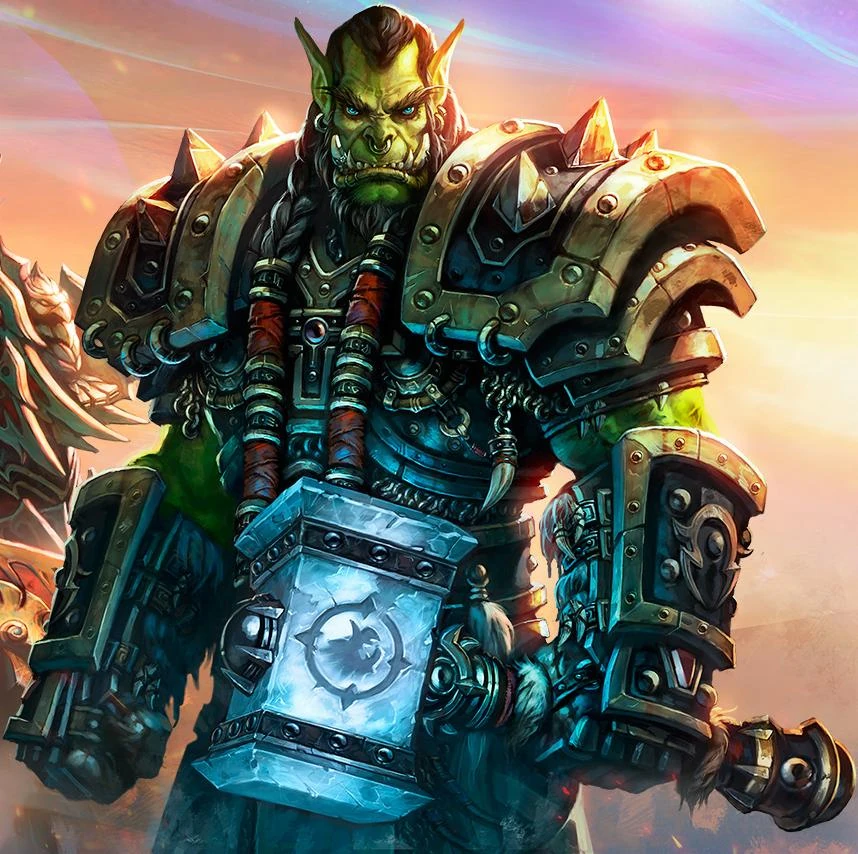

| Photo |
Name |
Brief Understanding |
|  |
Thrall |
Also known as Go’el, is a central character in World of Warcraft, a heroic orc raised as a slave by humans before reclaiming his heritage and becoming a pivotal figure in the Horde. As a shaman and warrior, he led the orcs to freedom, established the city of Orgrimmar, and served as Warchief of the Horde. Thrall is deeply committed to balance and peace, often acting as a mediator during conflicts between the Horde and Alliance. He stepped down as Warchief to focus on spiritual guidance and played a critical role in defeating major threats like Deathwing and the Burning Legion. His story is one of resilience, leadership, and the pursuit of unity amidst war and chaos. |
 |
Jaina Proudmoore |
A powerful mage and one of the most prominent leaders of the Alliance in World of Warcraft. As the ruler of Kul Tiras, she plays a vital role in uniting her people and leading them through times of war and conflict. Once a strong advocate for peace between the Horde and Alliance, her perspective hardened after the destruction of Theramore by the Horde. Despite her grief and anger, she often finds herself torn between vengeance and her innate desire for diplomacy. Jaina's story is one of resilience, leadership, and the struggle to balance personal loss with the responsibilities of protecting Azeroth. |
|
Sylvanas Windrunner |
The Banshee Queen, after her death at the hands of Arthas Menethil, who transformed her into an undead servant. Breaking free from his control, she became the leader of the Forsaken, the undead faction within the Horde, and sought vengeance against Arthas and a place for her people. Her quest for power and survival led her to controversial actions, including burning Teldrassil and making pacts with the Jailer, a cosmic force of death. Sylvanas’s story is one of tragedy, defiance, and moral ambiguity, as she oscillates between being a savior to her people and a ruthless, divisive figure. Ultimately, her choices challenge the boundaries of heroism and villainy in Azeroth’s history. |
|
Arthas Menethil |
A prince of Lordaeron who sought to protect his people but ultimately fell to darkness, becoming the infamous Lich King. His downfall began with his obsession to stop the Scourge, leading him to wield the cursed blade Frostmourne, which consumed his soul. Arthas slaughtered his own people in Stratholme, murdered his father, and merged with the Lich King, gaining dominion over the undead. As the Lich King, he sought to spread death across Azeroth, becoming one of the most iconic villains in World of Warcraft. His story is a tragic tale of good intentions corrupted by power, culminating in his defeat during the Wrath of the Lich King expansion. |
|
Anduin Wrynn |
The young and idealistic King of Stormwind in World of Warcraft, known for his commitment to peace and diplomacy. As the son of King Varian Wrynn, he initially struggled with the weight of leadership but grew into a wise and compassionate ruler. Anduin is deeply connected to the Light, wielding its power as a priest to heal and inspire his allies. Despite his peaceful nature, he has led the Alliance in pivotal battles, including against the Horde during the Fourth War. His journey reflects the challenges of leadership, balancing hope and conviction in a war-torn world. |
|
Illidan Stormrage |
Known as the Betrayer, is a pivotal and complex figure in World of Warcraft. A night elf and one of the first demon hunters, he consumed fel energy to gain immense power, often walking the line between heroism and villainy. He was imprisoned for millennia for his reckless actions during the War of the Ancients but later played a critical role in fighting the Burning Legion. Illidan's ultimate goal was to protect Azeroth, though his methods were often ruthless and misunderstood. His story is one of sacrifice and redemption, culminating in his pivotal role as the jailer of Sargeras in the Legion expansion. |